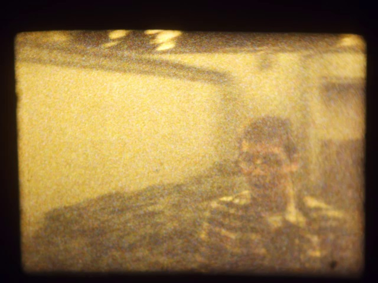
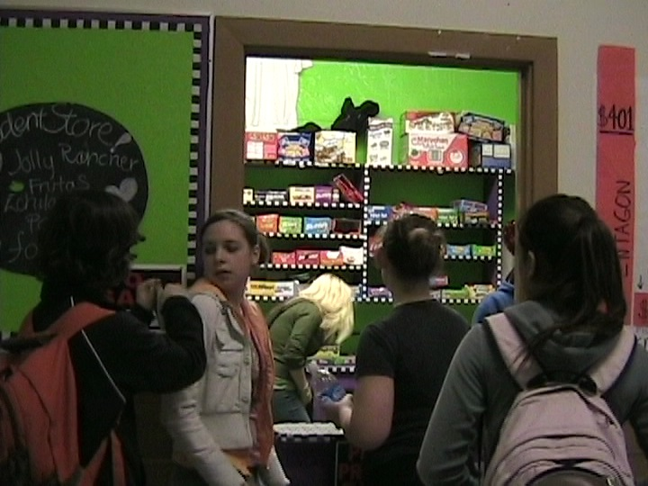

OPB Dance West Feature |
Kahlo's View - Theater Performance 2002 |
Metropolis - Dance West 2002 Performance |
1994 ACMA Super 8 - Libby, John, and Andrea |
PAC Guide & Tour |
ACMA Jazz Band - Flow - Clay Standley |
Night of Jazz 2003 |
Terrenean |
Raw Footage from Around ACMA |